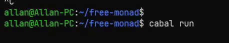

Posted on August 16, 2023
Coroutines are a powerful feature that can help you create responsive games. Coroutines are functions that can pause and resume their execution at any point, without blocking the main thread of the game. This allows you to perform tasks that require waiting, delays, or multiple steps, without affecting the responsiveness of your game. There are a perfect abstraction for modeling events over time, such as animations, physics, and AI.
For example, imagine you want to create a simple animation where a character moves from one point to another, while changing its color and size. You could write a coroutine that updates the character’s position, color, and size every frame, and pauses until the next frame using the yield statement, without worrying about an explicit time parameter.
Coroutines are a common feature in many programming languages, such as Lua, Python, and C#. However, they are not a native feature of Haskell. In this article, we will explore how to implement coroutines in Haskell using continuations and monads. We will also see how to use coroutines to create a simple game.
What is a continuation?
A continuation is a way of representing the state of a computation at any point in time. Like a snapshot of what the program is doing and what it needs to do next. A continuation can be used to resume the computation from where it left off, or to transfer the control to a different part of the program. A continuation can also be passed as an argument to another function, which can then decide how to continue the computation. This is called continuation-passing style, and it is a common technique in functional programming languages.
One way to understand continuations is to imagine that every function has an extra parameter that represents what the function should do after it finishes its work. This parameter is called the continuation, and it is usually a function that takes the result of the original function as its input. For example, suppose we have a function
id :: a -> a
id x = xWe can rewrite it in continuation-passing style as
idCps :: a -> (a -> r) -> r
idCps x k = k xwhere k is the continuation. The function id_cps calls k with x. Since continuations allow you to transfer the control to a different part of the program, we can use them to implement control flow constructs such as if. For example, we can implement if as
ifCps :: Bool -> (a -> r) -> (a -> r) -> a -> r
ifCps True t f a = t a
ifCps False t f a = f awhere t is the continuation that will be called if the condition is true, and f is the continuation that will be called if the condition is false. We can use ifCps to implement a function that returns the absolute value of a number:
absCps :: (Num r, Ord a, Num a) => a -> (a -> r) -> r
absCps x k = ifCps (x >= 0) k (\x -> k (-x)) xwhich we can use as
> absCps (-5) id
5Monadic continuations
Continuations are a powerful abstraction, but they are not very convenient to use. Continuations are functions that take a single argument, and return a value. This means that if we want to use continuations to implement a coroutine, we would have to explicitly pass the continuation to each function.
Instead we can use the monad abstraction to simplify this process.
What is Monad?
A monad is a concept from category theory. A category is a collection of objects and arrows, called morphisms, between them, that satisfy some basic rules. For example, the category of sets has sets as objects and functions as arrows.
A functor is a way of mapping one category to another, preserving the structure of the objects and arrows. For example, the power set functor maps any set to its power set (the set of all subsets), and any function to the function that takes the image of each subset.
An endofunctor is a functor that maps a category to itself. For example, the power set functor is an endofunctor on the category of sets.
A monad is a special kind of endofunctor, that comes with two additional operations: unit and join. The unit operation takes any object in the category and returns an object in the image of the endofunctor. The join operation takes any object in the image of the endofunctor applied twice, and returns an object in the image of the endofunctor applied once. These operations have to satisfy some coherence conditions, similar to the ones for monoids (which are structures with a binary operation and an identity element).
One way to think about a monad is that it adds some extra layer of structure or context to the objects and arrows in the category. For example, the power set monad adds the structure of subsets and inclusion relations. The unit operation wraps an object into a singleton subset, and the join operation flattens a set of subsets into a single subset.
This abstraction is a perfect abstraction for our coroutines, since the continuation is the context that we must pass around to every function that uses the coroutine.
Monadic continuations
We can use the monad abstraction to simplify the implementation of coroutines. We can define a monad that represents a continuation as
newtype Cont r a = Cont { runCont :: (a -> r) -> r }
instance Functor (Cont r) where
fmap f m = Cont $ \c -> runCont m (c . f)
instance Applicative (Cont r) where
pure a = Cont ($ a)
(<*>) = ap
instance Monad (Cont r) where
m >>= k = Cont $ \c -> runCont m $ \a -> runCont (k a) cwhere r is the type of the result, and a is the type of the value. The runCont function takes a continuation as an argument, and returns the result of the continuation. We can use this monad to implement our previous functions idCps, ifCps, and absCps as
idCps :: a -> Cont r a
idCps x = Cont $ \k -> k x
ifCps :: Bool -> Cont r a -> Cont r a -> Cont r a
ifCps True t f = t
ifCps False t f = f
absCps :: (Num r, Ord a, Num a) => a -> Cont r a
absCps x = ifCps (x >= 0) (idCps x) (idCps (-x))which gives us the same results as before:
> runCont (absCps (-5)) id
5While the Cont Monad gives us a good basis for implementing coroutines, we also need to track the state as well, otherwise, we would not be able to resume the coroutine from where it left off.
Monadic State
We can use the State monad to track the state of the coroutine. The State monad is a monad that takes a state as an argument, and returns a value and a new state. We can define the State monad as
newtype State s a = State { runState :: s -> (a, s) }
instance Functor (State s) where
fmap f m = State $ \s -> let (a, s') = runState m s in (f a, s')
instance Applicative (State s) where
pure a = State $ \s -> (a, s)
(<*>) = ap
instance Monad (State s) where
m >>= k = State $ \s -> let (a, s') = runState m s in runState (k a) s'The state monad are functions of the type s -> (a, s), which take a state as an argument, and return a value and a new state. We can use this monad to implement a function that increments a counter as
inc :: State Int Int
inc = State $ \s -> (s, s + 1)which we can use as
> runState inc 0
(0, 1) -- 0 is the value, and 1 is the new stateNow we are familiar with the two monads that we need to implement coroutines. We have to figure out how to combine them together. We can use the monad transformer to combine many monad transformers together.
Monad Transformers
A monad transformer is a monad that takes another monad as an argument, and returns a new monad. To use monad transformers we have to redefine our previous monads to take an additional m argument, which stands for an arbitrary monad. By convention the transformer version of a monad is prepended with a capital T. For example, the transformer version of the State monad is called StateT.
newtype StateT s m a = StateT { runStateT :: s -> m (a, s) }
instance Monad m => Functor (StateT s m) where
fmap f m = StateT (fmap (\(a, s') -> (f a, s')) . runStateT m)
instance Monad m => Applicative (StateT s m) where
pure a = StateT $ \s -> pure (a, s)
(<*>) = ap
instance Monad m => Monad (StateT s m) where
m >>= k = StateT $ \s -> do
(a, s') <- runStateT m s
runStateT (k a) s'As you can see the only difference between the State monad and the StateT monad is that the StateT monad takes an additional m argument, and uses the m monad to combine the results of the two monads together. With the monad transformer we can define the base monad by using the identity monad:
newtype Identity a = Identity { runIdentity :: a }
instance Functor Identity where
fmap f m = Identity (f (runIdentity m))
instance Applicative Identity where
pure = Identity
(<*>) = ap
instance Monad Identity where
m >>= k = k (runIdentity m)
type State s a = StateT s Identity aBy the way all of these monad transformers are implemented in the mtl package, so you don’t have to implement them yourself. We are just implementing them here to explain the process from scratch and to understand how they work. For the rest of this post, I’ll be using the mtl package for the monad transformers, since it comes with some useful typeclasses that reduce boilerplate.
We can do the same for the Cont monad, but I’ll leave that as an exercise for the reader.
Coroutine Monad
Now how do we actually go about using these monad transformers to implement coroutines? Well importantly coroutines can stop and start, so we need to be able to store the state of the coroutine. We can do this by storing the continuation in a list. Let’s implement a data type that can do this:
newtype Coroutine r m a = Coroutine { runCoroutine' :: ContT r (StateT [Coroutine r m ()] m) a }
instance Functor m => Functor (Coroutine r m) where
fmap f (Coroutine c) = Coroutine $ fmap f c
instance Applicative m => Applicative (Coroutine r m) where
pure = Coroutine . pure
(Coroutine f) <*> (Coroutine a) = Coroutine $ f <*> a
instance Monad m => Monad (Coroutine r m) where
(Coroutine a) >>= f = Coroutine $ a >>= runCoroutine' . fBy the way this wonderful coroutine type was borrowed from this great tutorial. The continuation monad has a runCont of type (a -> (StateT [Coroutine r m ()] m) r) -> (StateT [Coroutine r m ()] m) r. For reasons you’ll see later the types of r and a are equivalent, and a == (), so in reality the type becomes (() -> (StateT [Coroutine () m ()] m) ()) -> (StateT [Coroutine () m ()] m) (), with only the monad m as a free type. With so many () you can probably smell that we are going to be writing our coroutines in a imperative style. Other than this datatype, this is all pretty standard boilerplate for monads, however, mtl introduces a few other typeclasses that are nice to have and makes your code more concise, so let’s implement those as well
{-# LANGUAGE UndecidableInstances #-}
{-# LANGUAGE MultiParamTypeClasses #-}
instance Monad m => MonadCont (Coroutine r m) where
callCC :: Monad m => ((a -> Coroutine r m b) -> Coroutine r m a) -> Coroutine r m a
callCC f = Coroutine $ callCC $ \k -> runCoroutine' (f (Coroutine . k))
instance MonadIO m => MonadIO (Coroutine r m) where
liftIO :: MonadIO m => IO a -> Coroutine r m a
liftIO = Coroutine . liftIO
instance MonadTrans (Coroutine r) where
lift :: Monad m => m a -> Coroutine r m a
lift = Coroutine . lift . lift
instance MonadState s m => MonadState s (Coroutine r m) where
get :: MonadState s m => Coroutine r m s
get = lift get
put :: MonadState s m => s -> Coroutine r m ()
put = lift . putMonadCont provides a function named callCC which I’ll explain in detail later. MonadIO allows us to lift IO actions into our coroutine. MonadTrans allows us to lift monadic actions into our coroutine. MonadState allows us to use the state monad inside our coroutine. I added the function signatures to make it clear what each function does. Importantly the implementation of MonadState requires the UndecidableInstances extension. This is because the MonadState typeclass has a functional dependency m -> s, which means that the compiler can infer the type of the state from the type of the monad. However, since we are using a monad transformer, the compiler cannot infer the type of the state from the type of the monad, so we have to explicitly tell the compiler that it is safe to use this instance. In general most MultiParamTypeClasses with functional dependencies need UndecidableInstances. In theory this could be resolved using type families, but that is beyond the scope of this article.
Call Me (The Current Continuation) Maybe
Before I continue into the implementation I have to talk about callCC. callCC is a powerful and somewhat controversial abstraction. It stands for call with current continuation, but what does that mean? Well let’s look at an example:
succCont :: Int -> Cont r Int
succCont n = return (succ n)
succCallCC :: Int -> Cont r Int
succCallCC n = callCC $ \k -> k (succ n)So callCC is a function that takes another function as input. The k that the lambda function takes as an argument is another function. The k function has the effect of return in an an imperative language, as in no mater what is after k, once you call k the entire callCC block returns with the value passed into k. To break down the types to see if we can understand callCC better. k has the type Int -> Cont r Int. Notice that the signature of k is the same as succCallCC, if we use our intuition that k acts as an early return then this makes sense, since after we call k the entire function must return, and so the argument (in this case Int) types must be the same. The type of callCC is a bit more weird, it has the type ((a -> Cont r b) -> Cont r a) -> Cont r a, so it takes a function which has argument (a -> Cont r b) which is our k, and returns a Cont r a, and then callCC returns a Cont r a. But the best thing about this function is that k is just an ordinary function, we can do whatever we want with it including storing it in data structures to use later. This is exactly what we are going to do with our coroutine. We are going to store the continuations in a list, and then we can use it later to resume the coroutine. Just to solidify the idea of callCC I’ll show you one more example, where we can use callCC to implement perform a jump.
jump :: Int -> Cont r String
jump n = do
msg <- callCC $ \k -> do
condition n k
let n' = n + 12
return $ show n'
return msg
condition :: Int -> (String -> Cont r ()) -> Cont r ()
condition 0 k = k "jumped on zero"
condition 2 k = k "jumped on two"
condition _ k = return ()In this case we are using callCC to implement a jump. If n is equal to 0 or 2 then the evaluation of the entire callCC block will return, and notice that we passed k into another function, so in essence this function will jump to the callCC block with the value applied to k, otherwise it will return show n'. Importantly, the rest of the code after the callCC block will not be evaluated. So while the imperative return idea helps to understand callCC, in fact it is more powerful than return in a language like C, since it can jump to any point in the code, not just the end of the function.
Coroutine Implementation
With some understanding of callCC, we can now implement our coroutines. First, let’s implement the getters and setters for the continuation queue:
getContinuations :: Monad m => Coroutine r m [Coroutine r m ()]
getContinuations = Coroutine get
putContinuations :: Monad m => [Coroutine r m ()] -> Coroutine r m ()
putContinuations = Coroutine putObservant readers might notice that these implementations are almost identical to the get and put we implemented for the instance of MonadState. However, these functions are different, because get and put access the state of the monad m inside our coroutine transformer
instance MonadState s m => MonadState s (Coroutine r m) where
get :: MonadState s m => Coroutine r m s
get = lift get
put :: MonadState s m => s -> Coroutine r m ()
put = lift . putwhile getContinuations and putContinuations access the state internal coroutine list, which is always [Coroutine r m ()].
Now we can implement a queue and scheduler for our coroutines:
queue :: Monad m => Coroutine r m () -> Coroutine r m ()
queue p = do
ccs <- getContinuations
putContinuations $ ccs ++ [p]
schedule :: Monad m => Coroutine r m ()
schedule = do
ready <- getContinuations
case ready of
[] -> return ()
(p:ps) -> do
putContinuations ps
pThe queue function takes a coroutine and adds it to the end of the queue. The schedule function takes the first coroutine from the queue, and runs it. If the queue is empty, then it returns. Now we can implement the control primitives fork and yield
yield :: Monad m => Coroutine r m ()
yield = callCC $ \k -> do
queue (k ())
schedule
fork :: Monad m => Coroutine r m () -> Coroutine r m ()
fork p = callCC $ \k -> do
queue (k ())
p
scheduleThe difference between yield and fork is that yield adds the current continuation to the queue, and then schedules the next coroutine, while fork adds the current continuation to the queue, runs the coroutine p, and then schedules the next coroutine. To finish up we just need a way to run our coroutines:
finished :: Monad m => Coroutine r m ()
finished = do
remaining <- Prelude.null <$> getContinuations
do
unless remaining Main.yield
finished
runCoroutine :: Monad m => Coroutine r m r -> m r
runCoroutine coroutine = evalStateT (runContT (runCoroutine' $ coroutine <* finished) return) []Most of the runCoroutine function is just running each monad within the transformer. In essence it runs the coroutine, which has an addition of finished, which checks if the queue is empty, and if it is not empty, then it yields to the next coroutine. This is important, because otherwise the coroutine would end after the first yield. Then we run the continuation, with return, and finally we run the state monad, which is just the empty list.
Now let’s come back into the real world and see how we can use coroutines to implement a simple event over time. Let’s say you are making worm game, and you want to implement an idle animation for the worm, where the length of the worm changes over time. We can implement this as a coroutine. First, let’s define a plausible game environment:
type GameStateT m = StateT GameState m
type Length = Int
type Name = String
type GameState = Map Name LengthNow we can write the idle animation for the worm using coroutines like this:
wormState :: (MonadIO m, Monad m) => Name -> Coroutine () (GameStateT m) ()
wormState name = do
modify (insert name 4)
replicateM_ 12 $ do
Main.yield
modify (adjustWithKey (const succ) name)
replicateM_ 12 $ do
Main.yield
modify (adjustWithKey (const pred) name)The modify function is from the mtl package, and it is a convenience function that takes a function that modifies the state, and applies it to the state. The adjustWithKey function is from the containers package, and it is a convenience function that takes a function that modifies the value of a key, and applies it to the value of the key. In terms of the animation, this worm starts at an initial size of 4, over 12 frames it increases its size each frame, then over the next 12 frames it decreases its size each frame.
We can implement a simple render coroutine that displays our worm:
render :: (MonadIO m, Monad m) => Name -> Coroutine () (GameStateT m) ()
render name = do
l <- get
let worm = concat $ maybe [] (\x -> replicate (x + 1) "#") (Data.Map.Strict.lookup name l)
liftIO $ putStr "\ESC[2J"
liftIO $ putStrLn worm
liftIO $ threadDelay 50000
Main.yieldthreadDelay is there to limit the frame rate of the animation, otherwise it’ll be too fast, for a real game you would definitely use a more sophisticated method of synchronization. The putStr "\ESC[2J" is there to clear the screen before rendering the worm. The liftIO function is from the mtl package, and it is a convenience function that lifts an IO action into the monad.
Now we can combine these two coroutines together to create a simple game loop:
gameCoroutine :: Coroutine () (GameStateT IO) ()
gameCoroutine = do
let wormName = "Níðhöggr"
fork . forever . wormState $ wormName
fork . forever . render $ wormName
main = execStateT (runCoroutine gameCoroutine) Data.Map.Strict.emptyRunning this we get something like this:

Conclusion
In this article we explored how to implement coroutines in Haskell using continuations and monads. We also saw how to use coroutines to create a simple animation. Coroutines are a powerful abstraction that can help you create responsive games. Coroutines allow you to perform tasks that require waiting, delays, or multiple steps, without affecting the responsiveness of your game. There are a perfect abstraction for modeling events over time, such as animations, physics, and AI.
However, continuations aren’t the only method of implementing coroutines. This implementation uses trampolining to implement coroutine and also warps values in an functor. Their method allows for coroutines to take parameters upon resumption and yield values directly, which our coroutine implementation is unable to do. However, we can use state monads to overcome this issue, but our design is definitely less ergonomic. Additionally the use of continuations and callCC in Haskell is somewhat controversial since laziness allows for techniques that otherwise require continuations in other languages. Continuations can also severely reduce code readability, and can be difficult to debug.
Overall, when considering powerful abstractions like continuations, the most important question to ask is do we actually need all that power?
I hope you enjoyed reading and learned something new from this article. The full source code can be found here at my Github.